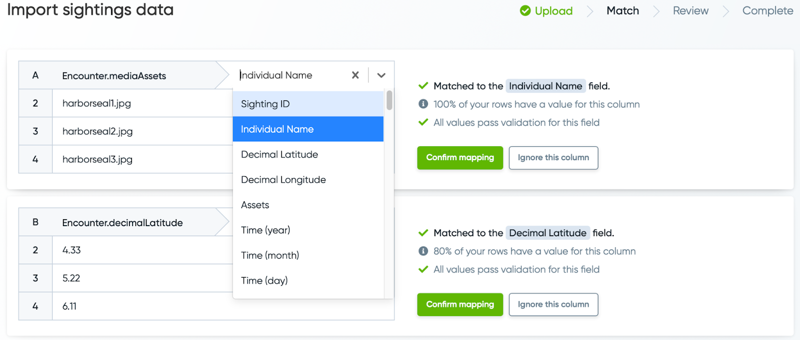

Bulk Import#
Bulk Import lets users upload up to 1,000 images with a spreadsheet containing the information of the Individuals present on the images.
Note
Your file names and spreadsheet name should only include letters from the English alphabet, 0-9, period, and space.
How to use Bulk Import#
Click on the drop-down arrow on the top right corner of the screen and select Bulk import.
In the space provided, you can drag and drop the images you want to import. You can also select browse files to import the images on your device.
To add more, select the +Add more button on the top right corner of the Bulk import section of the page.
Users have the option to skip importing images and go straight to uploading a spreadsheet by selecting the CONTINUE WITHOUT PHOTOGRAPHS button at the bottom of the screen. (Note: Users can upload .csv, .tsv, .xls, .xlsx, .xml, .txt file types.)
Users will be directed to the REVIEW AVAILABLE FIELDS page, where fields available for data imports can be reviewed.
Select UPLOAD SPREADSHEET, then the Upload data from file button.
After uploading a spreadsheet, you will be routed to the Import sightings data page.
Check if the Arrow icon on the preview of your spreadsheet is on the row where column headers are located. If it is, select the green Yes button. If not, click either the Select another row button or the No header row button.
Users will be routed to the Match section of the Import sightings data page.
Next to the column headers is a drop-down menu where you can specifically assign the fields related to the data on each column.
Select Confirm mapping on each section if the data on the column match the fields assigned to them, or Ignore this column. Users have to do this in every section. (Note: Deleting blank fields on your spreadsheet will help minimize errors while uploading.)
Note proceeding to the next page is not possible if certain fields are not assigned to their respective sections.
Users will be routed to the Review section of the Import sightings data page. Any cell highlighted in red needs to be fixed to proceed to the next page.
To have a better visualization of the errors you are getting, the Only show rows with problems and Show modifications switches can be toggled.
Select Continue on the bottom right corner of the page.
Select Yes on the pop-up window asking Are you ready to submit?.
Users will be rerouted to the REVIEW AVAILABLE FIELDS page.
Select the Species Detection Model on the drop-down menu located at the bottom of the page. This section will prompt Codex whether to automatically annotate the images or allow Manual Annotation.
Select REPORT SIGHTINGS to submit the data you uploaded as pending Sightings.
Users will be routed to the page that says Bulk import reported. Here you have the option to RETURN HOME or VIEW BULK IMPORT.
If you select VIEW BULK IMPORT you will see the pending Sightings. There will be an indicator of how many encounters are present on each Sighting. These data will be under the Asset count column.
You can select the view icon at the end of each row to view any of the Sightings.
Users will be routed to the Pending Sighting page. Scroll down and select ASSIGN ANNOTATIONS to begin the curation process and set IDs.
These Sightings are also available on the PENDING SIGHTINGS section of your homepage.
Bulk Import Fields#
Available fields specific to your Codex are displayed in the bulk import workflow.
Region, Time, and Time Precision are required for a successful import.
Note
This table includes only the shared bulk import fields across all Codexes. You can post a request for a new custom field (Such as Life Stage or Living Status) for your Codex in Community under the New Codex Field post category.
Animal fields |
Example value |
Pre-set value? |
Description |
|---|---|---|---|
Individual Name |
Seal001 |
– |
Default display name for the Individual |
Species |
Phoca vitulina |
See Codex for list of supported species under Report a Sighting > Individual Information > Species |
Genus and specific epithet. |
Sex |
unknown |
male, female, unknown |
Sex of the animal |
Sighting fields |
Example value |
Pre-set value? |
Description |
|---|---|---|---|
Sighting ID |
BPCT_20190825_1 |
– |
A unique code for the sighting |
Assets |
1235.jpg |
– |
The exact file name of the image. |
Region |
Pacific Ocean |
See Codex for list of supported regions under Report a Sighting > Location > Region |
Must match the region as shown in the Location menu of the Report a Sighting page. This field is required for a successful import. |
Notes |
We also took a separate video observation. |
– |
Notes about the sighting |
Shared animal and sighting fields |
Example value |
Pre-set value? |
Description |
|---|---|---|---|
Decimal Latitude |
-35.46 |
– |
Enter latitude coordinates using decimals instead of degrees, minutes, and seconds (DMS). |
Decimal Longitude |
54.678 |
– |
Enter longitude coordinates using decimals instead of degrees, minutes, and seconds (DMS). A location is required for a successful import. Use Region if you don’t include Decimal Longitude. |
Time (year) |
2023 |
– |
Enter a 4 digit number for the year. This field is required for a successful bulk import. |
Time (month) |
8 |
1-12 |
Enter a number 1-12 corresponding with the the month of the sighting |
Time (day) |
24 |
1-31 |
Enter a number 1-31 corresponding with the day of the month |
Time (hour) |
11 |
1-24 |
Enter a number 1-24, 24 corresponding with midnight |
Time (minutes) |
35 |
0-59 |
Enter a number 00-59 |
Time Precision |
day |
year, month, day, time |
Enter how precise the time is that you reported above. If you reported the year, month and day, enter “day” for this field. If you reported the time down to the minute, enter “minute” for this field. This field is required for a successful import. |
Timezone |
-08:00 |
+zz:zz or -zz:zz |
Enter as an offset of UTC |
Freeform location |
Saw this about five minutes into our tour near mile marker 5, somewhere in Tanzania |
– |
Freeform field to describe the location where the sighting took place |